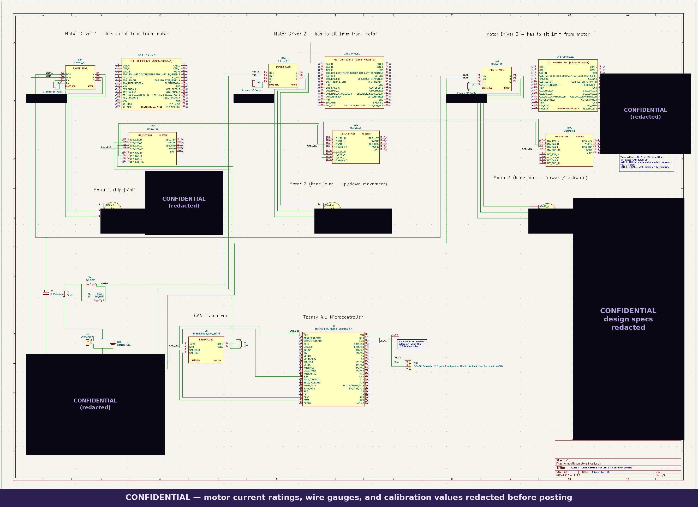

Closed-Loop Leg Controls for a NASA Lunabotics Quadruped
Tldr; Lunabotics is a yearly NASA competition where college teams build a robot that digs up fake lunar soil and uses it to build a berm. Our UCF team is building a four-legged walking excavator instead of a wheeled one. I'm an undergrad on the Controls team supporting our Controls lead, and most of my time has gone into learning the CARA homing sequence, assembling the leg (mechanical and electrical), and researching IMUs, PID control and whole-body control. This post is everything I've learned so far, from how one joint holds its position all the way up to how the whole robot stays balanced while it digs. It's long on purpose.
What Lunabotics is
The challenge
The NASA Lunabotics Challenge is a two-semester university competition run out of NASA's Kennedy Space Center every year. Teams use NASA's systems engineering process to design, build and test a prototype robot that can do lunar construction. It's been running since 2010, and over time it's shifted from mostly mining to construction, which lines up with what Artemis will actually need on the Moon.
The main task is to excavate simulated lunar soil (regolith), carry it across rough terrain, and use it to build a berm. Essentially a berm is a raised mound of soil that gives structure, support or protection. On the Moon that could be something like a wall that blocks rocket exhaust from spraying debris off a landing pad, or shielding for equipment. So the robot isn't just a digger. It has to dig, move across uneven ground while it's loaded, and dump the material precisely enough to actually build something.
How it's judged
What I think is really interesting is that how the robot does on competition day is only part of the score. Judges also look at:
- Mass: everything launched to the Moon costs a lot per kilogram, so a lighter robot is a better robot.
- Energy use: power on the lunar surface is limited, so teams track how much energy the robot uses to do its job.
- Communications: how much data goes back and forth, since bandwidth to the Moon is limited too.
- Autonomy: the more the robot can do without a person driving it, the better. Real lunar operations have communication delays and limited crew time.
- Systems engineering: teams submit plans and engineering reports through the year, so there's a real paper trail of requirements, design decisions and testing along with the hardware.
How the competition runs
The cycle opens in the fall, when teams apply and start turning in planning documents. Selected teams bring their robots to a qualifying round at UCF's Exolith Lab here in Orlando, where they run in lunar regolith simulant. The top teams then move on to the final round at the Kennedy Space Center Visitor Complex. For the 2026 cycle NASA picked 47 teams for qualification and moved the top 10 on to a three-day final in May. Having both the qualifier and the finals basically in our backyard is def part of what makes this a cool competition to be in as a UCF student.
Why it matters beyond the competition
This isn't just a student project with a Moon theme on it. It's tied directly to NASA's plans for lunar infrastructure. Kennedy's Swamp Works lab has been developing its own lunar excavator, IPEx (the Infrastructure Pilot Excavator), and the problems students work on (moving regolith with a light, low-power, autonomous machine) are the same problems NASA is working on for real missions.
Why our team is building a quadruped
Most Lunabotics robots use wheels or tracks. Ours walks. Our team is building a four-legged excavation robot, and that's a big part of why the controls side is so interesting. A wheeled robot mostly has to worry about driving and steering. A legged robot has to decide, many times a second, where every foot goes, how much force every joint puts out, and how to keep the whole body from tipping over, all while the load it's carrying changes as it digs and dumps. That's what the rest of this post is about.
Where I fit on the team
I want to be upfront about this: I'm an undergraduate on the Controls team, not a lead. Our team has four leads (Controls, Electrical, Mechanical and Software), and each lead has team members supporting them. My role has been to help the Controls lead with whatever tasks come up. In practice, what I've spent the most time on is:
- Learning the CARA homing sequences: understanding how each joint finds its zero position when the robot powers on, and why that step matters so much for everything after it.
- Hands-on assembly: putting together both the mechanical and electrical components of the leg.
- Research: IMU sensors, PID control and whole-body control.
So read this as what I've learned from helping build and understand the system, not the full design story of the robot. That belongs to the whole team, and especially our leads.
What I can and can't share
Lunabotics is a NASA-sponsored competition, and our team treats specific design numbers (current limits, wire gauges, calibration values, controller gains, that kind of thing) as internal to the team. So the schematic further down has those values blacked out, and I kept specific figures for our robot out of the writing too. Any numbers you do see in this post come from public sources like the CARA project or datasheets, and I say where they come from. Everything else is how I'd explain it to a friend.
How I got oriented
Two videos got me oriented before I touched anything. The first was Brian Douglas' PID Control — A brief introduction, which is just a really clear explanation of the three terms and why you'd want each one. The second was I Built a Robot Dog Using... Rope?, a build log by Aaed Musa for a quadruped called CARA. CARA ended up being the design reference I kept going back to, mostly because its hardware is pretty close to ours: each joint is driven by an ODrive S1 motor controller, a Teensy 4.1 talks to those controllers over CAN, and the leg uses a five-bar linkage.
The big picture: layers of control
Before getting into details, it helped me a lot to see that controlling a legged robot isn't one problem. It's a stack of problems, each one running on top of the one below it:
- Joint level: make each motor go to, and hold, whatever position, speed or torque it's told. This is where PID is.
- Calibration: make sure every joint knows where "zero" is, so the numbers the controller uses actually match the physical leg. This is homing.
- Leg level: turn "put the foot here" into the joint angles that get it there. This is inverse kinematics.
- Step level: plan the path each foot takes through the air and when each leg lifts and lands. This is trajectory planning and gait.
- Body level: coordinate all four legs so the body stays balanced and moves the way you want, using feedback from an IMU. This is whole-body control.
The rest of the post goes up that stack roughly in order.
PID control
The intuition
Essentially PID is three ways of reacting to "how wrong am I right now, and how has that been changing." The error is the difference between where you want to be (the setpoint) and where you actually are (the measurement). Say a joint is supposed to hold a position and something pushes it off:
- Proportional (P): the bigger the error right now, the harder you push back toward the target. Simple, but push too hard and you overshoot. Push too soft and the joint sags under load and never quite gets there.
- Integral (I): keeps a running total of error over time. This is what gets rid of that leftover sag. If the joint has been a little off for a while, the integral term keeps pushing harder until the error is actually zero, not just close.
- Derivative (D): looks at how fast the error is changing and pushes back against that. This is the term that keeps P from overshooting and oscillating. It sees the joint coming at the target fast and eases off before it flies past.
The equation
Written out, the controller output u(t) (for a motor, that's basically how much
torque or current to command) is:
u(t) = Kp·e(t) + Ki·∫e(τ)dτ + Kd·de(t)/dt
e(t) = setpoint(t) − measurement(t)
Kp, Ki and Kd are the gains, which are the knobs you
tune. Each one scales how much its term contributes. The way I think about it: P reacts to the
present, I reacts to the past, and D reacts to where things are heading in
the future.
What it looks like on a microcontroller
A real controller doesn't run in continuous time. It runs in a loop at a fixed rate, so the integral becomes a running sum and the derivative becomes the difference between two samples:
error = setpoint - measured
integral += error * dt
derivative = (error - prev_error) / dt
output = Kp*error + Ki*integral + Kd*derivative
prev_error = errorThat looks almost too simple, and in practice a few things make real PID loops messier:
- Integral windup: if the joint is physically blocked (pressed against a hard stop or stuck in regolith), the error never goes away, so the integral keeps growing. When the obstruction clears, all that built-up integral makes the joint lurch way past its target. The fix is to clamp the integral or stop adding to it while the output is maxed out.
- Derivative noise: taking the difference of two noisy measurements makes the noise bigger, so the D term can make a motor buzz or chatter. It's common to low-pass filter the derivative, or take the derivative of the measurement instead of the error so a sudden setpoint change doesn't cause a big "derivative kick."
- Output limits: a motor can only put out so much current. The math doesn't know that, so the output has to be clamped, and the rest of the loop has to still behave when it's clamped.
Cascaded loops inside the motor controller
Something I didn't expect: on a motor controller like the ODrive, there isn't just one PID loop. There are several nested inside each other. The outer position loop decides what velocity the motor needs to close the position error. That velocity command goes into a velocity loop, which decides what current (torque) is needed. That goes into an inner current loop, which sets the actual voltages on the motor's three phases. Each inner loop runs faster than the one outside it.
So when an ODrive runs a joint in position, velocity or torque control mode, you're essentially choosing which layer of that stack you hand your command to. Position control fits "hold this angle." Velocity control is useful for moving a joint at a steady speed, like during homing. Torque control is what you want once a higher-level controller is deciding forces directly, which is where whole-body control comes in.
Tuning
Tuning is balancing the gains against each other: enough P to respond quickly, enough I to get rid of steady-state error without getting sluggish, and enough D to damp out oscillation without making the joint feel numb. For nested loops, the usual approach is inside-out: tune the innermost loop first, then the next one out, then the outermost. Within a loop, a common hands-on approach is to raise the proportional gain until the joint starts to oscillate, back it off, then add damping and finally a small amount of integral. For a legged robot, "well-tuned" doesn't mean perfectly stiff. You usually want the joint to have a natural, damped, slightly springy response, which is where the actuator design comes in.
Actuators: quasi-direct drive and CARA's capstan drives
The gear ratio tradeoff
Brushless motors spin fast but don't make much torque on their own, so almost every robot
joint has some kind of reduction between the motor and the joint. A reduction with ratio
N multiplies torque by about N and divides speed by N.
That sounds like a free win, but there's a catch that matters a lot for legs: the motor's rotor
inertia, as felt at the joint, gets multiplied by N².
τ_joint ≈ N · τ_motor
ω_joint = ω_motor / N
J_reflected = N² · J_motorSo a high-ratio gearbox makes the leg feel heavy and stiff from the outside. My main concern with that for a leg is impacts. If the foot hits something it didn't expect, the motor can't be back-driven easily, so the full shock goes into the gear teeth. High-ratio gearboxes also tend to have backlash (a little bit of slop) and friction, which makes it harder to know exactly how much force the leg is applying.
Quasi-direct drive
A quasi-direct drive (QDD) actuator pairs a wide, high-torque "pancake" motor with a low gear ratio, low enough that the motor is almost directly connected to the leg. MIT's Cheetah robots made this idea well known. The point isn't speed, it's compliance and transparency:
- Compliance: if the leg steps on something unexpected, it can give a little, like a muscle absorbing an impact, instead of sending the full shock into a gearbox and breaking something.
- Backdrivability: you can push the leg by hand and the motor turns. That means outside forces show up in the motor instead of being hidden behind friction.
- Transparency / proprioception: since there's so little in the way, motor
current is a good estimate of joint torque. For a brushless motor, torque is roughly
proportional to current (
τ ≈ Kt · I), so the robot can essentially "feel" contact forces through its motors without needing separate force sensors in the feet.
You still keep almost all of your control authority. You just also get some natural forgiveness built into the mechanics instead of relying completely on software to react fast enough.
Why rope?
CARA's twist is that its reduction isn't gears at all. It uses capstan drives: a rope wrapped around a small drum on the motor and a bigger drum on the joint, and friction between the rope and drums transmits the torque. According to the CARA project page, capstan drives give zero backlash, high torque transparency, low inertia, low cost and quiet operation, and CARA runs at an 8:1 ratio. That's a very typical quasi-direct drive ratio, just built with rope instead of a planetary gearbox. It was a good reminder for me that the principle (low ratio, high transparency) matters more than the specific mechanism.
Homing: learning the CARA homing sequence
This is the part I've spent the most time on, and it's also the part I underestimated the most at first. Homing sounds like a boring setup step, but everything above it in the control stack depends on it being right.
Why a robot needs to home
Every joint controller works in numbers: "go to angle X." For that to mean anything, the robot has to know which physical position is angle zero. The encoders on our motors measure the motor's rotation, but between the motor and the foot there's a reduction and a linkage. With a reduction, the motor turns several times for one turn of the joint, so a motor-side reading alone doesn't tell you for sure where the joint is when the robot first powers on. Even a small offset at one joint gets multiplied by the length of the leg into a noticeable error at the foot. So if the zero is wrong, inverse kinematics will calculate perfectly correct angles for the wrong leg, and the foot ends up somewhere you didn't plan.
How current-based homing works
The CARA approach is nice because it doesn't need extra hardware like limit switches. It uses the fact that, with a transparent actuator, motor current tells you about force. The project page describes homing as spinning each joint to its physical limit, which is detected by a rise in current draw. Broken down step by step:
- Start gentle: put the joint in a low-speed mode (velocity control fits well) with a conservative current limit, so when it hits something it won't damage the leg, the rope or itself.
- Drive toward a known hard stop: the joint moves slowly in one direction toward a mechanical limit whose position is known from the CAD.
- Watch the current: while the joint is moving freely, it only needs a little current to get past friction. When it hits the stop, the velocity loop keeps asking for more torque to keep moving, so the current jumps up. When the current crosses a threshold (and usually the velocity also drops to about zero), that's the signal it hit the limit.
- Record and offset: save the encoder reading at that moment. Since you know the physical angle of the hard stop, you can calculate the offset between encoder counts and the real joint angle.
- Back off: move the joint away from the stop to a safe starting pose so it isn't left pushing into the limit.
- Repeat joint by joint, in order: the order matters. On a linkage leg, some joints change the geometry of others, and you don't want two joints fighting each other or the leg swinging into the body or the ground while it homes.
What can go wrong
Learning the sequence also meant learning how it can fail, which helped me understand the whole system better:
- False triggers: if the threshold is too low, a sticky spot or extra friction partway through the motion can look like a hard stop, and the joint "homes" in the wrong place.
- Missed triggers: if the threshold is too high or the current limit is too generous, the joint pushes hard into the stop before it notices, which stresses the hardware.
- Soft stops: if the stop has some give to it, the exact point where the current rises is less repeatable, so the zero can shift a little between power cycles.
- Transmission slip: on a rope-driven joint, if the rope ever slips on the drum, the relationship between motor angle and joint angle changes, and the robot has to re-home.
My biggest takeaway: homing is where the software's idea of the robot and the physical robot get lined up. Everything after it, from inverse kinematics to balance, assumes that alignment is correct.
Kinematics: from "put the foot here" to joint angles
Forward vs. inverse
Forward kinematics answers "given these joint angles, where is the foot?" That one is usually straightforward, you just follow the geometry from the hip to the foot. Inverse kinematics (IK) answers the question you actually care about when walking: "I want the foot at this x, y, z point, so what joint angles get it there?" Essentially IK is the layer that lets you think "put the foot here" instead of "spin this motor this much."
Why the five-bar linkage makes it harder
Our leg uses a five-bar linkage, and so does CARA. In a simple "open chain" leg, like a human arm, each joint just hangs off the one before it: shoulder, then elbow, then wrist. A five-bar linkage is a closed loop. Two motors, usually mounted coaxially at the hip, each drive their own link, and those links connect through two more links that meet at the knee and foot. So the foot's position depends on both motor angles at the same time, through the closed loop.
The benefit is mechanical: both heavy motors sit up at the hip instead of one riding out at the knee, which keeps the moving mass of the leg low (and that makes the leg faster and easier to control). The cost is that the IK isn't as simple as a textbook two-link arm.
The general approach
With three motors per leg, the problem splits into pieces:
- Hip abduction/adduction: one joint swings the whole leg in and out sideways. Looking at the leg from the front, you can solve for that angle from the foot's sideways and vertical position.
- The in-plane problem: once that angle is known, the rest of the problem is in the flat plane of the leg: find the two hip motor angles that put the foot at a given forward and vertical position.
- Closing the loop: in that plane, you work backward from the foot through the linkage, usually with the law of cosines and some careful trig, to find where each driven link has to point. A closed linkage usually has more than one mathematical solution, so part of the job is picking the one that matches how the leg is actually assembled (knee bending the right way).
One more thing I learned is that IK has to respect limits. If you ask for a foot position outside the leg's reach, or one that would push a joint past its range, the math can give you garbage or no answer at all, and the controller has to handle that safely instead of sending a wild command to the motors.
Trajectory planning and gait
Once the leg can put its foot anywhere, the next question is how it gets from one foothold to the next.
Swing and stance
Every step has two phases. In stance, the foot is on the ground holding weight and pushing the body forward. In swing, the foot is in the air moving forward to its next foothold. A gait is just the pattern of which legs are in swing and which are in stance at any moment. CARA uses a trot, where diagonal pairs of legs move together. For a slow, heavy excavator, gaits that keep more feet on the ground at once are also worth looking at, since stability usually matters more than speed.
Shaping the step
The swing path matters more than I expected. If the foot lifts off and lands abruptly, the robot jerks, the body shakes, and the impacts go straight into the hardware. The CARA project page describes a cycloidal step trajectory, which gives a smooth takeoff and landing. In the build video, the motion along each axis is also shaped with a triangular velocity profile: constant acceleration up to a peak speed, then constant deceleration back down, instead of jumping straight to a constant speed. That same profile gets applied independently on each axis, and it's noticeably less jerky than moving at a constant velocity.
Sensing: why an IMU
What's inside an IMU
Beyond joint-level control, the quadruped needs to know its own orientation, which means an IMU (inertial measurement unit). An IMU combines:
- An accelerometer, which measures linear acceleration along three axes, including the constant pull of gravity.
- A gyroscope, which measures angular rate, how fast the body is rotating around each axis.
- Often a magnetometer, which measures the local magnetic field and can act like a compass for heading.
Why no single sensor is enough
Each of those sensors has a different weakness, and that was the most important thing I learned researching them:
- The accelerometer can tell you which way is down when the robot is still, since the only acceleration it sees is gravity. But as soon as the robot moves, steps or vibrates, it sees those accelerations too, so the "down" estimate gets noisy.
- The gyroscope is smooth and fast in the short term, but to get an angle you have to integrate the rate over time, and any tiny bias adds up. So the angle estimate slowly drifts.
- The magnetometer gets thrown off easily by nearby metal and the magnetic fields from motors and high-current wiring, which a robot full of brushless motors has a lot of. (And on the actual Moon, there isn't a useful global magnetic field to navigate by anyway.)
Sensor fusion
The fix is sensor fusion: combine the sensors so each one covers for the others' weaknesses. The simplest version is a complementary filter. It trusts the gyroscope for fast, short-term changes and the accelerometer for the long-term sense of which way is down, essentially high-pass filtering one and low-pass filtering the other. More advanced approaches include the Madgwick filter and Kalman filters, which weigh each sensor by how much it can be trusted at each moment. A lot of modern IMU modules run this fusion on the chip and output an orientation directly, which takes work off the main microcontroller.
What the robot uses it for
Together those give the whole-body controller what it needs: not just where each foot is, but which way the whole body is tipping or turning. CARA, for example, uses a BNO086 IMU to sense its orientation relative to gravity, which helps it balance and handle slopes. Its project page also notes that it only updates its orientation from the IMU when all four feet are on the ground, once per step cycle, which is a smart way of avoiding the noisiest parts of the gait.
What I looked at when researching IMUs
When I was researching IMU options, these were the questions that kept coming up:
- Does it do fusion onboard? Getting an orientation estimate straight from the sensor saves a lot of work on the microcontroller.
- How does it connect? I2C, SPI or UART, and whether that fits cleanly with the rest of the electronics.
- How noisy is it, and how much does it drift? Datasheets list noise density and bias stability for this.
- How fast does it update? The balance controller can't react faster than its sensor data comes in.
- Where does it go on the robot? Ideally rigidly mounted near the center of the body, away from motors and high-current wiring, and isolated from digging vibration. My main concern here is that an excavator shakes a lot more than a walking robot dog, so mounting is def something to think through early.
Whole-body control
What it is
Everything so far is about one leg. Whole-body control (WBC) is about treating the robot as one system. Instead of each leg following its own path independently, the controller asks: given where the body is, how it's oriented and how it's moving, what forces should each foot push into the ground so the whole robot does what I want? Then it turns those forces into joint torques for every motor at once.
How the layers fit together
In research quadrupeds like MIT's Mini Cheetah, the control stack is usually layered like this:
- A gait scheduler decides which feet should be on the ground and when.
- A body-level planner, often model predictive control (MPC), looks a short time into the future and calculates the ground reaction forces each stance foot should apply to keep the body on track.
- The whole-body controller solves an optimization problem, usually a quadratic program, that finds joint torques that produce those forces while respecting physical constraints: feet in stance can't slip, so the force has to stay inside the friction cone; motors have torque limits; and the robot's full dynamics have to add up.
- Each joint then tracks its command with the kind of PD control from above, usually in torque mode.
This is exactly where quasi-direct drive pays off. Whole-body control assumes you can command a torque and actually get that torque at the joint. A transparent, backdrivable actuator makes that assumption a lot closer to true.
Why it matters for an excavator
A robot dog walking on a flat floor is one thing. An excavator is harder in a few specific ways that make whole-body control worth it:
- The load changes: as the robot digs and dumps regolith, its mass and center of mass shift, so the force each leg has to carry keeps changing.
- The ground moves: regolith simulant is loose and can shift under a foot, so "this foot is planted" isn't always a safe assumption.
- Digging pushes back: excavation forces act on the body, and the legs have to resist them without the body tipping or sliding.
The leg's electrical architecture
Each leg has three joints, each driven by an ODrive S1 controller running one of three control modes depending on what that joint needs: position, velocity or torque control. The ODrive handles the fast inner loops (field-oriented control of the brushless motor, plus the velocity and position loops) using encoder feedback, so the higher-level code doesn't have to. A Teensy 4.1 is the leg's local microcontroller and talks to all three ODrives over CAN. The Teensy 4.1 fits this well since it's fast and has multiple CAN controllers built in.

CAN in a nutshell
CAN (Controller Area Network) is the bus cars use so dozens of electronic modules can talk to each other, and it's popular in robotics for the same reasons. It sends data over a differential pair (CAN High and CAN Low), so electrical noise that hits both wires equally cancels out, which matters a lot right next to high-current motor wiring. Every message has an ID, and when two nodes try to talk at the same time, the lower ID wins automatically without corrupting either message. The bus also has to be terminated at its ends so signals don't reflect back and mess up the data.
Hands-on assembly
A big part of my time has been physically putting the leg together, both the mechanical and electrical side, and I think it's taught me as much as the research has. A schematic tells you what connects to what, but it doesn't tell you how a cable routes through a joint that moves, where connectors need strain relief so they don't work loose, or how much space there really is around a motor once everything is mounted. Assembling the mechanical side also made the controls concepts a lot more concrete for me. Once you've held the linkage in your hands, the five-bar kinematics and the hard stops used for homing stop being abstract.
Why we ended up designing a PCB
The short answer is signal integrity on the CAN bus. Once you're running several ODrives off one bus, you start worrying about how to catch corrupted data, and that pushed us into comparing error-detection methods: CRC, checksum, LRC (longitudinal redundancy check) and VRC (vertical redundancy check).
- VRC: basically a parity bit per character. Cheap, but it misses any error that flips an even number of bits.
- LRC: calculates parity across a whole block, column by column. Better, but certain patterns of errors still cancel out.
- Checksum: adds up the data and sends the sum. Simple and fast, but some errors (like two bytes swapping places) don't change the sum.
- CRC: treats the message as a big binary polynomial and divides it by a fixed generator polynomial, and the remainder gets added to the message. It catches all single-bit errors, all burst errors up to a certain length, and the vast majority of everything else.
We landed on CRC, the same kind of cyclic redundancy check cars use on their own CAN buses. Essentially it's a calculated code added to each message that lets the receiver detect whether the data changed in transit, without having to resend anything to confirm it.
That decision fed into a bigger topology question, daisy chain vs. star:
- Daisy chain: a break anywhere leaves both sides improperly terminated, and one failed connector can take down every node downstream of it. Intermittent wiring faults are really tedious to track down. In exchange, it supports much higher speeds, roughly 1–5 Mbps.
- Star: a fault on one spoke only takes out that one device, and the wiring is more intuitive. A central junction block with individual runs out to each node, so troubleshooting is modular. The tradeoff is a much lower speed, typically under 125 kbps.
Since we're running the bus through a Jetson, we get to use CRC-based error detection, the same category of technique automotive CAN buses rely on at much higher data rates, which is part of why the topology tradeoff isn't as painful as it would be on a simpler embedded setup. A PCB also just makes the wiring more reliable than a mess of loose jumpers: fixed connectors, controlled routing for the differential pair, and termination built in where it belongs.
A current challenge: the foot
One thing we're actively working through is the foot itself. The geometry of a curved foot is really hard to control for, because the contact point and effective foot shape keep changing as the foot rotates through a step. That means the IK, which assumes the foot is a single point, is slightly wrong at every moment, and the whole-body controller's idea of where the force is being applied is slightly wrong too.
Our current plan is to use snowshoes and treat the foot as effectively flat. A flat contact surface is a lot easier to model and control than a curved one, and on loose regolith a wider foot also spreads the robot's weight over more area so it doesn't sink as much. The cost is some adaptability on uneven terrain, since a flat foot doesn't roll over bumps the way a rounded one does.
What I'm taking away from this
The biggest thing I've learned is how connected every layer is. A PID gain that's slightly off, a homing offset that's a few degrees wrong, an IMU mounted somewhere that vibrates, or a foot shape the model doesn't account for: any one of those shows up as the whole robot walking badly, and it's rarely obvious which layer is the problem. Working on this team has made me a lot more patient about understanding the bottom of the stack before trying to fix the top of it.
References
- Lunabotics Challenge. NASA
- NASA's 2026 Lunabotics: Winning Student Teams Engineering Lunar Future. NASA Kennedy Space Center
- Douglas, B. PID Control — A brief introduction. YouTube
- Musa, A. I Built a Robot Dog Using... Rope? (CARA build log). YouTube
- Musa, A. CARA project page. aaedmusa.com
- Wensing, P. M., et al. Proprioceptive Actuator Design in the MIT Cheetah: Impact Mitigation and High-Bandwidth Physical Interaction for Dynamic Legged Robots. IEEE Transactions on Robotics, 2017
- Kim, D., et al. Highly Dynamic Quadruped Locomotion via Whole-Body Impulse Control and Model Predictive Control. arXiv:1909.06586
- Inertial Measurement Unit (IMU) – An Introduction. Advanced Navigation
- ODrive S1 Datasheet. ODrive Robotics documentation
- Texas Instruments. Introduction to the Controller Area Network (CAN), Rev. B. SLOA101B
- Cyclic redundancy check. Wikipedia